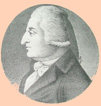

Dirck Ten Broeck
Dirck Ten Broeck was born in November 1765. He was the only son of Albany leader Abraham Ten Broeck and his wife Elizabeth Van Rensselaer Ten Broeck.
 His twin sister died before her second birthday. Son and grandson of mayors of Albany and of the lord of Van Rensselaer manor, Dirck grew up in Albany's highest circles - living in his father's house on Market Street and at his family's country homes.
He was trained to practice law. He was admitted to the bar in 1791 and served on the Albany city council in 1793.
But prior to his twentieth birthday, in September 1785, he married an even younger Cornelia Stuyvesant at the New York City Dutch church. Perhaps due to the inordinately early marriage age of his bride, their family was very large with twelve children baptized in Albany and several more babies that were stillborn.
This Ten Broeck family also made its home on Market Street. Dirck was elected to represent Albany in the New York State Assembly first in 1796. In 1798, he was named speaker of the Assembly. He served in that body thru 1802. In 1800, his third ward household included three children and four servants.
He inherited substantial lands upon the death of his father in 1810. However, his legal practice dictated that he spend substantial time in New York City.
His wife died in Trenton, New Jersey in 1825. Dirck Ten Broeck lived until December 1832.
Engraving of a lithograph of Dirck Ten Broeck while he was speaker of the New York State Assembly, 1798-1800. Reproduced in TBG, and explained on p. 146. In November 1812, he paid $30 for a portrait that has not been located.